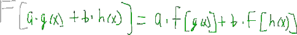

Properties of Linearity
The following is a summary of a lecture video. You may click on the '+' buttons next to the figures in order to expand further details.
Let's recap what we did in the last video.
We had this differential equation here, then we found that it had two linearly independent solutions, e to the t and e to the three t, and we said that the general solution to this differential equation is a linear combination of these two solutions, just a constant times one solution plus another constant times the other solution.
What I want to talk about in this video is, why is this the case?
Why is the general solution a linear combination?
How does that even result from this property of linearity of the differential equation?
Let's get started.
+

We know that y is equal to e to the t, we know that's a solution to this differential equation, it satisfies it.
What would happen if we were to multiply this solution by constant, like c or c could be any number like two, point five, negative twelve, anything, it's just a constant.
Is it constant times a solution still a solution?
+

We take the first derivative, that's just c times e to the t, and likewise, the second derivative, that's also c times e to the t.
+

If were to plug these into here, we get that the second derivative minus four times the first derivative, plus three times y, that's equal to zero.
Every term has a c times e to the t term, so we can factor that out, we get c times e to the t times, one minus four plus three, that should be equal to zero.
We knew that one minus four plus three is zero, so we get that zero is equal to zero, and this holds.
C times e to the t is also a solution, which means if we multiply solution by any constant, it is still a solution to this differential equation.
That means that, pi times e to the t satisfies it, that means a million times e to the t satisfies this, that means point zero zero one times e to the t satisfies it.
They are all solutions.
Now, let's take a look at one other thing.
+

We know that, e to the t is a solution, and we knew that e to the three t is a solution, but what would happen if we were to add them together?
Is the sum of two solutions also a solution?
Let's find out.
Let's take the first derivative again, that's just e to the t plus three e to the three t, let's take the second derivative, that's just e to the t plus nine e to the three t.
+

If we plug that into the differential equation, we get the second derivative e to the t plus nine, oops, e to the three t minus four times the first derivative, e to the t plus three e to the three t plus three times our zero derivative, that should be equal to zero, we'll see.
Let's group together all the two like the e to the t terms in all the e to the three t terms together, so we get e to the t, I am going to factor it out, and say, times one minus four plus three plus e to the three t, grouping all these terms together times nine minus four times three is minus twelve plus three is then equal to zero.
We know that, one minus four plus three is zero, and nine minus twelve plus three is zero, so, we have e to the t times zero plus e to the three t times zero is equal to zero.
That is also true.
A sum of two solutions is also a solution.
Now, let's combine these two facts that we learned.
Let's take our solutions, multiply them by constants and add them together, but there is a name for that.
+

What's it called?
It's called, taking the linear combination of our two solutions.
We know that since multiplying by a constant works in, by adding our two solution works, we know that, this linear combination is also a solution.
In fact, we like to call it the general solution, because it can describe all possible solutions to this differential equation, describes every possible solution.
If you have a linear differential equation, the general solution is a linear combination of the linearly independent solutions.
You are going to hear the word, linear quite a lot in this video.
That's all a very important property that, all is a case for a linear differential equation, but what makes a linear differential equation so special?
In order to really answer that, we have to take a step back.
Let's move away from differential equations, and just think about Math in abstract terms.
+

Let's say, we have a function g of x, we say that something operates on this function, you can call it an operator f.
If it inputs one function, then we get out another function, let's say, h of x.
There are lots of examples of operators, just something that changes one function to another function, like multiplying by a constant is an operator, taking a derivative is an operator, squaring something is an operator, all these things in taking one function as an input, and giving another function as an output, just like thinking in abstract terms.
+

There is an important class of operators called, linear operators.
Linear operators, all share one very important property.
If you have the input a times g of x plus b times h of x, g of x and h of x, they are just two arbitrary functions, and a and b, those are just two constants.
This is equal to a times f operated on g of x plus b times f operated on h of x.

This may seem fairly confusing when we think of it in very abstract terms, but we'll find that they are quite a lot of examples of linear operators.
+

Let's make things more clear.
Instead of using this input, let's take a look at two x plus three x squared, and we'll find that multiplying by a constant is a linear operator, because if we are to multiply this by four, we know that's the same as just two times four times x plus three times four times x squared.
We'll find that basically saying that this operator or this entire input is the same as it operating on one input, with the same scalar plus operating the other input with the same scalar.
+

Now, we'll find that there are other examples of linear operators like, taking a derivative is a linear operator, because if we take e derivative, we take e derivative term by term, that's two times the derivative of x plus three times e derivative of x squared.
+

We'll find that, taking a definite integral is a linear operator, because likewise, we integrate term by term, and we know that, this is equal to two times the definite integral of x dx plus three times the definite integral of x squared dx.
Taking derivatives and integrating definitely, that's also a linear operator.
+

What's an example of something that's not a linear operator?
One important class of non-linear operators is raising to an exponent, if we had this two x plus three x squared, well, if we have this all squared, we know that, this is not equal to two times x squared plus three times x squared squared.
We know that, we have to factor out, and we'll have other terms, so, raising to an exponent is not a linear operator.
We can form other linear operators by combining these, like taking a derivative and multiplying by a constant is a linear operator, taking higher derivatives is a linear operator.
+

If we add two linear operators, the result is almost like a linear operator.
In fact, we can say something like taking a derivative of a function, or secondary derivative of a function minus four times taking the derivative of a function plus three times that function, that's also a linear operator, but this was just our differential equation, which is basically the same thing, except we had it under one constraint, that this was equal to zero.
It turns out, our linear differential equation is also a linear operator.
Since, this is a linear operator, some people like to use a little shorthand.
If this is all equal to zero, they may just say that the linear operator of this differential equation, acting on y is equal to zero.
Here, are L acting on y, that's just analogous to this whole f acting on g of x.
In this particular case, you can think of L as just equal to the second derivative minus four times the first derivative plus three.
L acting on y is just this acting on y, so it's a little shorthand notation.
If we think about it, this makes sense that this linear differential equation, or at least this bit here is a linear operator.
+

Let's look back at the definition we used for a linear differential equation.
We said that a differential equation was linear, if it had a general form, a n of x times d nth derivative of a function with respect to x plus a to the n minus one, of x times the n minus one derivative, all the way down to let's just say, a one of x times the first derivative plus a naught acting on y.
We said that, this was a form of a linear differential equation, and the reason is, it's composed of linear operations.
If you recall, if we square or raised any of these derivative terms, to an exponent or if we multiply any of these derivative terms by each other, then it would be non-linear differential equation.
We know now, that's because, raising to an exponent, that's not a linear operation.
A linear differential equation is composed of linear operations.
How does this property of linearity show up for linear differential equations?
+

Let's just say that we have two solutions that satisfy this differential equation, y one and y two, such that, L operating on y one is just zero and L operating on y two is equal to zero.
+

That means that, we can work in reverse, and say that L operating on c one times y one plus c two times y two, that's equal to using our main property of linear operators, that is equal to c one times L acting on y one plus c two times L acting on y two.
We know that, L acting on y one, that's zero and L acting on y two is equal to zero, so, we get that, this whole thing is equal to zero, which means that this whole thing is also a solution, it also satisfies this condition, that the linear operator is equal to zero.
Because our differential equation is linear, we know that if we have two solution that satisfy it, with that we can form a linear combination of those two solutions, and the result will still satisfy it.
That's exactly what we found up here, we found that, if we add two solutions that satisfy this differential equation, that the linear combination of them also satisfy it.
We just worked in reverse up here.
Here we went from the property and went forward, up here we had this and went backwards.
That's quite a lot, let's recap what we found in this video.
We were able to define a linear operator, and we said that, our linear differential equations, that's a differential equation that's composed of linear operators, and because of this property that all linear operators follow, we know that, if we were to have two solutions, then a linear combination of these two solutions is also a solution.
We were able to theoretically show the origin of why a linear combination of two solutions is also a solution, it all stems from this wonderful property of linearity.
Hopefully, that wasn't too confusing.
We'll continue on with more second order differential equations in the next video.